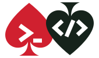
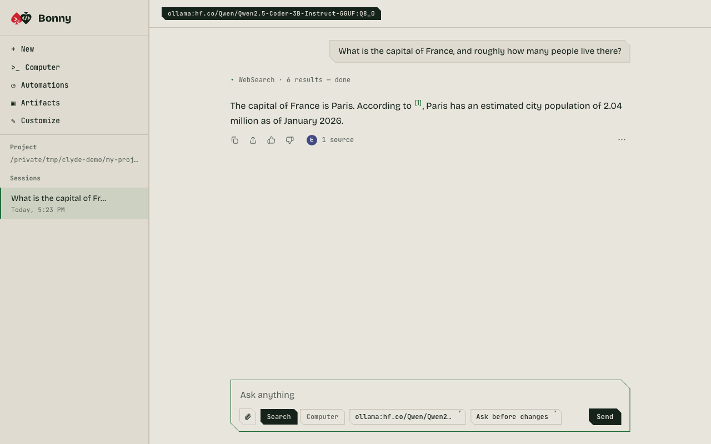

BonnyThe web side of Clyde. The same engine, tools, memory and sessions as the terminal, in a page that opens on your own machine, with a plainer way to use them and a voice of her own.

Ask. Search mode looks the web up first and shows what the answer cites.
Start her
With Clyde installed, run this in your project. Your browser opens on a page only your computer can reach.
clyde luv bonnyPick a model with clyde --model provider:model luv bonny. --port N chooses the port and --no-open skips the browser. To go the other way and start the terminal Clyde, run bonny luv clyde.
What she does
- Search and Computer
- Search answers with sources you can open. Computer mode gives the model the same tools Clyde has in the terminal, with permission cards before it changes anything.
- Queue, steer, stop
- Send the next prompt while one runs, steer a turn between steps, or stop it. The terminal shares the same mechanism.
- Files in, files out
- Attach images and text files by button, drop or paste. Artifacts lists every file Clyde wrote or edited, with a sandboxed preview.
- Sessions you keep
- Pin the ones you return to. Delete one and it moves to the archive, with Undo. Each project has its own list.
- Automations
- Run a prompt every few minutes, daily or on chosen days. They run only while Bonny is open, skip a run missed while she was closed, and only read unless you allow edits.
- Your project, your folder
- Browse to any folder, make a new one where you want it, and work there. Tools, permissions and new sessions follow.
- Council
- Ask the top four models of a tier at once. Laya rates the answers, and you can see them all and vote.
- Yours to restyle
- Themes, colours, a background image, corners, font, a greeting, your own CSS and a theme code you can share.
Good to know
- It listens on
127.0.0.1only. Each run has its own token, and requests must carry it and a matching Host and Origin. - What she can do depends on the model. A small local model can answer and search but may stumble on tool use in Computer mode; a stronger model does better.
- Previews of files Clyde wrote run in a sandbox that cannot reach Bonny, your files or the network.
- MCP servers and hooks load for the folder Bonny started in. Restart her to pick up another project's own.
- PDFs and other binary files can't be attached yet; she says so when you try.